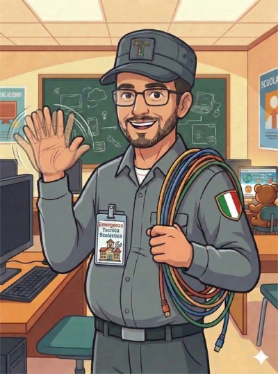

Ciao! Benvenuto nell'Officina dell'AT
Sono un tecnico informatico delle scuole superiori. Questo è il mio spazio, creato riga dopo riga, per chi vuole scoprire questa professione e per i colleghi che cercano appunti operativi, test di preparazione e utility da chiavetta per laboratori scolastici.
Strumenti Operativi
Utilità e aggiornamenti per il lavoro quotidiano.
Area test e simulatori
Misura le tue conoscenze pratiche di informatica per lavorare a scuola. Preparati ad esami specifici come quello per DigComp 2.2, addetto antincendio e tanti altri.
Resta Aggiornato
Risorse pratiche per chi lavora a scuola. Ricevi in anteprima i nuovi simulatori e le utility digitali pensate per semplificare la vita in laboratorio, in cattedra o in segreteria.
Trucchi del Mestiere
Script, comandi rapidi e utility da chiavetta per la gestione del laboratorio ma anche per tutti.
🧑🔧La Professione
Tutto quello che c'è da sapere per iniziare e crescere come Assistente Tecnico di Laboratorio.
Come si diventa tecnico
Requisiti, titoli di studio e accesso alle graduatorie ATA (24 mesi e terza fascia).
Cosa fa un tecnico
Mansioni, orari, responsabilità e gestione quotidiana dei laboratori.
Avanzamento di carriera
Posizioni economiche, passaggi di profilo e ricostruzione di carriera.
Link e Portali Utili
Le risorse di riferimento: siti ministeriali, normative e portali per l'aggiornamento ATA.
📒 I Miei Appunti
Oltre a questa Officina digitale, ho deciso di mettere la mia esperienza su carta. Ho scritto questi libri per raccogliere i miei appunti quotidiani, le soluzioni ai problemi tecnici più comuni in laboratorio e le esercitazioni per superare i test. In fondo, è il materiale che avrei voluto avere io tra le mani il mio primo giorno di scuola.

Diario di un AT di laboratorio delle scuole superiori
Il lavoro del tecnico raccontato in prima persona, tra emergenze informatiche e burocrazia. Seguimi durante le mie giornate di lavoro e le strategie per puntare all'avanzamento economico.

Tutti possono fare l'Assistente Tecnico
Per tutti coloro che vogliono iscriversi nelle graduatorie come tecnico di laboratorio informatico e hanno timore di non esserne all'altezza una volta chiamati. Un manuale sulle richieste tipo che incontrerete durante il vostro lavoro.

Quiz dell' Assistente tecnico delle scuole
Manuale di preparazione alla professione e all'esame per le posizioni economiche ATA. Quiz su IA, Digicomp 2.2, gestione documentale, normativa, sicurezza (D.Lgs. 81/08), informatica, reti, casi pratici di laboratorio e aule, differenze tra posizioni economiche.